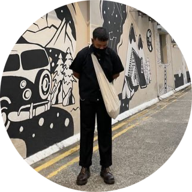

Muhammad Zuhaili Bin Shadikin
Singapore 123456
Summary
Dedicated software engineer/developer with 1 year experience in ServiceNow domain. Has completed various projects from automated emails to automated approvals in different set of modules and applications.
Experience
Infosys iCompaz , Singapore - Service Delivery Officer
July 2022 - Present
- ServiceNow
- Implemented and documented various items on the platform to meet business
needs: Service Catalog, ITIL forms,dashboard and reporting, email notifications to
automate processes, Automated Test Framework during application upgrade.
- Configured CEO Dashboard for stakeholder use in providing KPI, essential to the
ITIL and business process.
- Change Management
- Conducted daily/weekly checks on any aging tickets to ensure compliance with the SLA requirements.
- Developed clear , accurate and timely reporting for both internal and external stakeholders.
NEC, Singapore - IT Support Engineer
May 2022 - July 2022
- Performed daily health checks before business operating hours to ensure all systems are working as expected.
- Incident handling when a P1,P2,P3 or P4 issue arises and ensures timely closure in response to SLA.
- Troubleshooting hardware , OS (Windows) issues and network technologies (TCP/IP , UTP Cabling, Network Architecture Design).
Education
Singapore Institute of Management , University of Wollongong , Singapore— Bachelor’s in Business Information Systems
October 2022 - March 2022
- Relevant Coursework : Business Process Management , Web Server Programming , Business Communications , Big Data Management
Nanyang Polytechnic , Singapore— Diploma in Multimedia & Infocomm Technology
March 2015 - March 2018
- Relevant Coursework : System Administration , Web Development , Graphic Design , Production (Photography & Videography)
Skills
- Tools: ServiceNow, Visual Studio Code, GitHub, Adobe XD, Adobe Lightroom
- Programming Languages: HTML, CSS, Javascript, PHP, SQL, Hadoop, Spark
- Software Methodologies: Agile Product Management (Scrum and Kanban), Waterfall Model, Software Development Lifecycle (SDLC)
Certificates
- ITIL v4 Foundation by PeopleCert